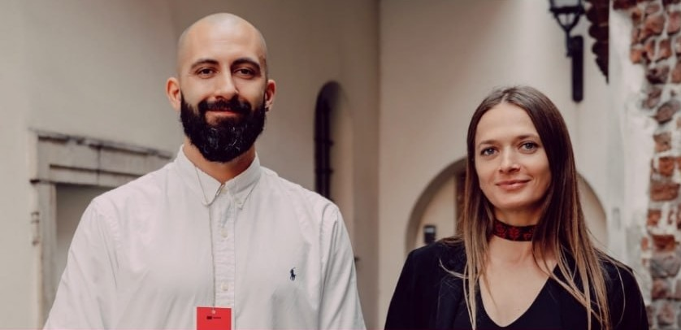
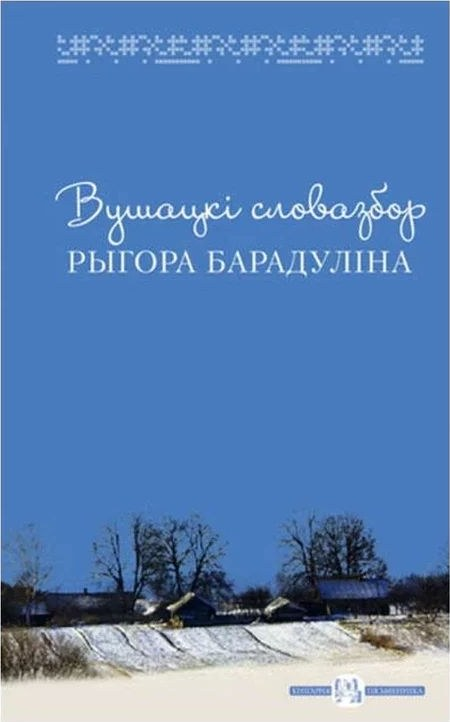
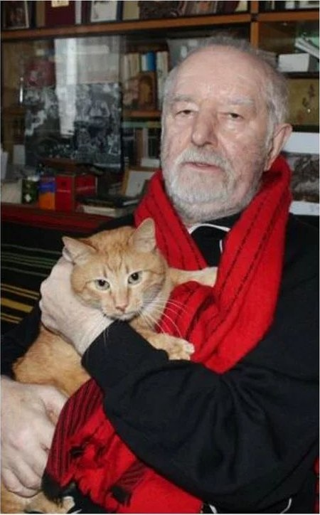
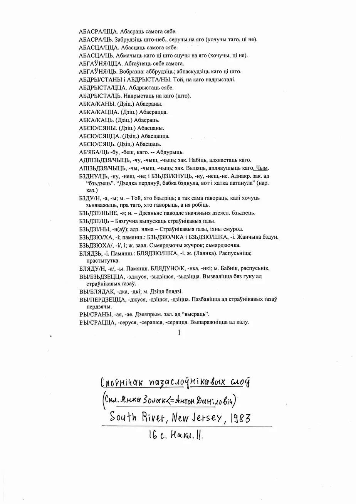

грамадская дзяячка, папулярызатарка беларускай мовы, блогерка
Аляксей Картыннік
aka АйЦіБарада
праграміст, блогер, даследчык штучнага інтэлекту

Хто мы
Мова Нанова
Бясплатныя курсы(?) беларускай мовы
2014
існуем са студзеня 2014 года
2022
ва Ўроцлаве
?
Пытанне да залы
Самая распаўсюджаная памылка сярод слухачоў і выкладчыкаў «Мовы Нанова»
Сюрпрайз-сюрпрайз!
Адказ
Занятак і заняткі
занятак
адзіночны лік
Дзейнасць, якой нехта заняты: яго ці яе справы або праца.
капаць зямлюпісаць лістбудаваць дом
заняткі
множны лік
Вучэбныя гадзіны ці ўвогуле час вучэння.
уроклекцыясемінар
Тое, што мы робім у хаце, на падворку, у агародзе ці на працы, — занятак. А тое, што наведваюць вучні ці студэнты, — заняткі. Дык мы з вамі сёння — на занятках.
Даследчыкі
Рыгор Барадулін
першы спецыяліст у скаромнай мове ў сучаснай Беларусі
Аўтар «Вушацкага словазбора» — зборніка жывой мовы роднай Вушаччыны з усімі яе скаромнымі словамі.


скаро́мныпрым.
1.
устарэлае
Паводле рэлігійных прадпісанняў — забаронены ў час посту (пра мяса, сала, малако). Скаромная ежа.
Ты, можа, скаромнага не будзеш есці, Аўдоля, напэўна ж посціш, то мо табе гуркоў з расолам прынесці? Чарнышэвіч
2.
пераноснае, размоўнае
Непрыстойны.
Скаромны анекдот.
Пытанне
Наколькі добра сёння вывучаная гэтая тэма?
XV
стагоддзе
Даследчыкі старабеларускай мовы фіксуюць ужыванне ненарматыўнай і вульгарнай лексікі ўжо ў XV стагоддзі.
XV ст.
старабеларуская мова
1870–1906
слоўнік Язэпа Ціхінскага
1983
«Слоўнічак» Янкі Золака
Нашы дні
Барадулін, Гарбацкі
1842 – 1922?
Язэп Ціхінскі
беларускі лексікограф
У ягоным слоўніку пададзеныя шматлікія вульгарызмы і абразлівая лексіка.
Беларуска-польска-расійскі слоўнік
1870–1906
Дасюль не выдадзены
Эміграцыя · ЗША
Янка Золак
беларускі паэт у эміграцыі ў ЗША, выдаў «Слоўнічак пазаслоўнікавых слоў»
Сапраўднае імя — Антон Даніловіч
Рарытэт
«Слоўнічак пазаслоўнікавых слоў»
South River, New Jersey
1983 год выдання
16 старонак
11 асобнікаў накладу

Сацыялінгвіст
Уладзіслаў Гарбацкі
даследчык беларускай лаянкі, укладальнік слоўніка скаромных словаў
Віцебск · Полацк · каля Оршы
Зафіксаваныя вульгарызмы і сексуалізмы
падрэз
п’янка, гулянка, оргія
качалка
прастытутка
прасушка
манера сядзення многіх мужчын у публічным месцы, асабліва ў транспарце — кавёлы раскярэчыўшы
Абазначэнне сексу
шлыхаццасмунічыцьсмунічыццамаслычыцца
Беларуская абразлівая лексіка звязана пераважна з плоцевасцю і з сексуальнасцю.
У меншай ступені — з жывёльным ці раслінным светам.
паскуднік, паскудніца, вельмі брыдкі і брудны чалавек
штыкля
доўгі цыбаты чалавек
раўгеша
брудны і смярдзючы чалавек
Рыгор Барадулін і Янка Золак
У сваіх тэкстах, дзякуючы ўжытым вульгарызмам і сексуалізмам, яны цудоўна апісалі багатую сексуальную спадчыну і сексуальны досвед беларусаў:
«Кожнае дыханне любіць папіханне»
«Пайшоў бы ў мніхі, дык яйцы ліхі»
«Да работанькі — анінютанькі, а да ябатанькі — ах, мае матанькі!»
Сабралі этнографы
Эратызаваныя эўфемізмы
Ой ты, мая Домна, Прыйдзі ка мне цёмна. Твая ступа, мой таўкач — Будзем крупы абтаўкаць.
Ай, такую яго маць, Гэнага Міколку! Я хацела яму даць, А ў яго з іголку.
Гісторыя і сучаснасць
Як у гістарычнай, так і ў актуальнай перспектыве нецэнзурная, у тым ліку сексуальная, лексіка апісвае не толькі гетэрасексуальныя, але і гомасексуальныя ды іншыя практыкі і з’явы:
дупу драць
займацца анальным сексам
дзюрасмок
той, хто займаецца аральным сексам у публічных прыбіральнях
церці мужыкоў / хлопцаў
мець за сексуальных партнёраў мужчын
У беларускай вульгарнай мове фіксуецца разнастайнасць сексуальных жаданняў і практык.
Курва— паланізм?
Не зусім.
Паводле даследчыкаў, слова ўзнікла ў старабеларускай мове ў той жа час, што і ў польскай. Яно актыўна ўжывалася ў нас — і часта ў варыянтах, якіх не ведала польская мова:
курвелькурвёнак
«Шлёндра»
прыйшло адначасова ў польскую і ў старабеларускую мовы праз нямецкую.
нямецкая
польская
старабеларуская
Самыя крыўдныя і моцныя абразы
Шмоняпаслаць у шмоню
калтокгаўнярдзюндзілаля*ваабізгал
баба-гой — мужыкаватая, непрыгожая баба
Праклёны
Беларуская мова — адна з нямногіх моваў у Еўропе, дзе захаваліся моцныя праклёны.
У сваім пасланні кляцьбонікі (праклёны) нашмат страшнейшыя і мацнейшыя за звычайную лаянку.
Трасца табе ў бок!
Каб цябе пярун трэснуў!
Каб цябе халера ўзяла!
Каб ты скіс!
Практыка
Што вы скажаце, калі…
01
…вы чакаеце карту побыту ўжо паўтара года, а ўжонд паведаміў, што згубіў вашыя дакументы?
02
…вы прыйшлі на заняткі «Мова Нанова» дакладна а 12-й, як было напісана ў афішы, а непунктуальныя Эмілія і Лёша распачалі іх толькі а 13-й?
03
…вас папрасілі «разговарівать на нормальном языке»?
Частка 2 · вядзе Аляксей «АйЦіБарада» Картыннік
Ці ўмее ШІ лаяцца па-беларуску?
Лаянка 2.0
Правяраем — і ствараем новыя скаромныя словы разам са штучным інтэлектам.
Крок 1
Разбіваемся на групы
3–5 чалавек
Аб’ядноўвайцеся з суседзямі. Пазнаёміцца можна і праз лаянку.
Тэлефон з ChatGPT
Мінімум адзін на групу. Хто ўвайшоў у акаўнт — той і пісар.
Абавязкова
Назва групы
Першае заданне — прыдумаць яе. Можна скаромную.
Крок 2
Адкрывайце наш ChatGPT
Навядзіце камеру тэлефона на QR-код — і трапіце ў падрыхтаваны праект з інструкцыямі і прыкладамі беларускай лаянкі.
Трэба ўвайсці ў свой акаўнт ChatGPT
⚠ Спасылка не ўстаўлена — js/config.js
Крок 3 · Задача
Лаянка ў сцэнцы
Сітуацыя
Напішыце ў чат «Прывітанне» і прыдумайце сітуацыю, у якой хочацца вылаяцца.
10 слоў і 10 фраз
ШІ згенеруе пад вашу сітуацыю новую лаянку з намёкам на сэнс. Бярыце 3–5.
Міні-сцэнка
Разыграйце сцэнку на 1–2 хвіліны, дзе прагучыць усё абранае. Яго сэнс абвяшчаеце перад выступам.
Калі не ведаеце, з чаго пачаць
Сітуацыі, калі хочацца вылаяцца
Ужонд згубіў вашыя дакументы на карту побыту
Цягнік PKP спазніўся на тры гадзіны
Сусед свідруе а 7-й раніцы ў нядзелю
Калега піша „+“ у агульны чат і больш нічога не робіць
Няма ідэі — дашліце ў чат 🎲, і Скаромнік прапануе свае.
Час пайшоў
Рыхтуем сцэнку
Сітуацыя → 3–5 слоў ці фраз → сцэнка. У вас 10 хвілін.
У чаце: яшчэ · мацней · мякчэй · бярэм 2, 7, 14 · сцэнка · фінал
Яшчэ не ў праекце?
10:00
Націсніце, каб пачаць
Фінал
Падарункі атрымаюць…
Самае смешнае
Ад чаго ўся зала ляжыць.
Самае правакацыйнае
Тое, што страшна сказаць уголас — але вельмі хочацца.
Самае жывое
Тое, што пойдзе ў народ і застанецца ў мове.
Кожная група: сітуацыя → словы, фразы і іх сэнс → сцэнка 1–2 хв
Дык што, ці ўмее ШІ лаяцца па-беларуску?
ШІ — вучыцца.
А вы — ужо ўмееце.
Дзякуй!
Сустракаемся на занятках «Мовы Нанова»
@movananovauro
Эмілія Гаўрус · Аляксей «АйЦіБарада» Картыннік
Забірайце з сабой
Прэзентацыя, прампт і базы
Скануйце — прэзентацыя адкрыецца на тэлефоне якраз на гэтым слайдзе